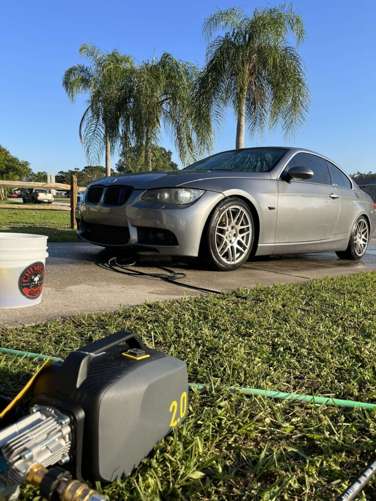

Exterior care
Remove everyday dirt and road film with a careful hand wash and rinse.

Mobile detailing in Orlando for exterior washes, interior care, and maintenance. Keep the finish looking its best after correction and coating.
Mobile detailing brings professional interior and exterior care to your home, workplace, or preferred location. This page’s film focuses on an exterior maintenance wash: a muddy green vehicle is foamed, rinsed, and revealed clean.
Routine detailing helps maintain appearance. If the paint has swirls or dullness, start with paint correction. If it has been corrected, ceramic coating is the next protection step.
Remove everyday dirt and road film with a careful hand wash and rinse.
Request interior cleaning tailored to the vehicle’s use and condition.
Return for maintenance detailing to care for the finish between larger services.
Details by Dame is based in Union Park and lists Orlando, Union Park, Winter Springs, and nearby Central Florida communities. Contact us to confirm your address.
Use a maintenance detail for routine cleanliness. Choose the restoration or protection service when the paint needs more.
For visible swirls, haze, and light defects in the paint.
Explore correction ↗For hydrophobic protection after the paint is prepared.
Explore coating ↗For routine interior and exterior care at your location.
Request maintenance ↗The first three seconds of the supplied clip show a muddy green vehicle being covered with foam and rinsed clean. The page scrubs only that wash segment.
A wash removes surface dirt; it does not correct paint defects in the clear coat. Paint correction is the service for swirls and haze.
The business lists Orlando, Union Park, Winter Springs, and nearby Central Florida communities. Contact us to confirm your location.
Tell us your vehicle and whether you need exterior, interior, or ongoing maintenance care.